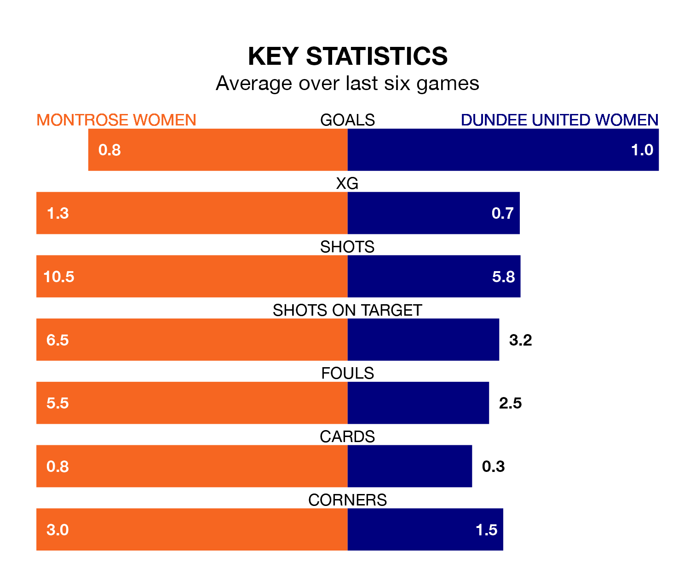

Sunday lunchtime's match at Links Park sees two relegation candidates play each other, as 11th-ranked Montrose Women host ninth-placed Dundee United Women.
Montrose have picked up six points from their first six SWPL 1 games, with one win and three draws.
That is four points less than Dundee United have collected, having won three and drawn one.
Montrose are in bad form in SWPL 1, with no wins and three draws from their last six games.
With two wins and four losses over that period, Dundee United's form is better – they have taken six points from 18, compared to the hosts' three.
With 11 goals in 14 games so far this season, Montrose are the league's second-lowest scorers with 0.8 goals per game. And they are conceding more than average, letting in 60 goals at a rate of 4.3 per game.
The away side are also below average scorers, with 0.9 goals per game, compared to a league average of 2.2. They have conceded 3.6 goals per game.
Montrose's last match was on November 26, a 7-0 loss against Rangers Women.
Dundee United lost 3-1 against Glasgow City Women last time out, also on November 26, with Jade Wilson on the scoresheet.
